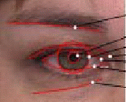
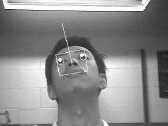

Papers overview
By Dmitry O. Gorodnichy
Session 1. Face detection and 2D tracking
The face processing task which precedes most other face processing tasks is face detection.
1.
The paper by Christian Siagian and Laurent Itti \cite{fpiv04-fd1} presents a
biologically- inspired approach to face detection. Knowing that the human eyes, when viewing a scene, scan it from one salient point to another, the paper combines the image saliency detection mechanism, which detect the most
conspicuous points in the images, of which human eyes, nose and mouth are, with the holistic gist detection mechanism, which searches for face-looking regions. Gabor filters are used for the first of the task, and Fourier transform followed by
log-Gabor filters are used for the second one. As such the approach does not require the brute force search while searching for a face.
The work uses b-w images, the size of the face model 40x50 (the eye size being 12x6) which is the smallest size for which face parts are still recognizable.
2. Zhengrong Yao and Haibo
Li \cite{fpiv04-fd2}, note that one of the best face detection techniques to date -- that of Viola and Jones \cite{viola-cvpr01},
which detects a face by using a cascade of pre-trained classifiers trained on binary features obtained from 24x24 face images using
Haar-like binary wavelets, fails to detect rotated faces. In order to circumvent the problem and to track thus lost faces they propose a method based on Dynamic Programming which uses a set of
Haar-like facial features used in face detection and the Viterbi algorithm to match the face between consecutive video frames. The work is motivated by the Model-based Coding application, which is a coding technique aimed for low bit rate video transmission of the face are used for face tracking.
3. Shang-Hong
Lai \cite{fpiv04-fd3}propose their own technique for real-time detection of face in video, which, as technique from \cite{viola-cvpr01}, also learns 24x24 faces using the Adaboost training algorithm and the
Haar-like wavelet features, however the features are computed using the colour component of video. Comparison between
gray-scale and colour -based face detection techniques is provided.
To predict where the face will be in the next frame, the authors use Kalman filtering.
4.
Another paper which offers their own method for rapid face detection is by Bernhard Froba and Christian Kublbeck
\cite{fpiv04-fd4}. As in \cite{viola-cvpr01}, the cascade of classifiers of increasing complexity is used. The analysis is done however on 22x22 image patches. The binary face features used in the work are obtained by using 3x3 kernels commonly used in detection of edges, corners etc. The thrust of the paper is to show that with the existence of rapid face detectors, the face tracking problem can be replaced by performing face detection in each frame. In order to smooth the jitter in thus obtained face positions, the authors propose to use the Kalman filter.
5. With the increased interest to AdaBoost learning for face detection classifiers, the paper by
Xiangsheng Huang, Stan Z. Li and Yangsheng Wang \cite{fpiv04-fd4} offers a proof, supported by artificial and real data, that using this learning algorithm with cascades is advantageous comparing to
using it without cascades.
Session 2. Eyes
In analyzing video for the presence of face, detecting the eyes plays a very important role. First, as mentioned in
\cite{fpiv04-fd1, fpiv04-ey2, fpiv04-ft4}, because they are of high contrast, they are two of them and because
they blink, they have become one of the most salient features in the images, which can be used to face detection from video easier.
Their location also makes a perfect reference frame for face memorization and recognition
\cite{fpiv04-fa2}.
They can also tell a lot about the emotional level of a person.
These are the key inspirations of the papers of this section.
6. Assuming that a face is detected by one of the face detection techniques, J. Rurainsky and P. Eisert
\cite{fpiv04-ey1} describe a fast and robust approach for detection eye pupil locations using a deformable pupil template controlled only by four parameters. The work is performed by using high-resolution colour images from FERET and CIF face image databases.
7.
The paper of Dmitry O. Gorodnichy \cite{fpiv04-ey2} describes techniques for detecting eye blinking from motion component of video. The work is done on low resolution video frames and is aimed at providing a vision-based solution to hands-free blink-based communication with a computer.
8.
If the high-resolution still snapshot from video are available, Ric Heishman, Zoran Duric and Harry Wechsler \cite{fpiv04-ey3}
show that by analyzing the eye lids positions, the results can be obtained on the level of fatigue and engagement of the user, which can be very useful in context of different Human Computer Interface
(HCI) scenarios.
Session 3. 3D Face Tracking
9. In their paper, Le Lu, Xiang-Tian Dai and Gregory Hager \cite{fpiv04-ft1}
propose to improve the
commonly used in sequential state estimation Particle Filtering technique by using Random Sampling
(RANSAC) technique to reduce the number of particles needed for tracking. This avoids
the usage of a dynamics model to propagate particles and making the tracking more robust.
The algorithm is applied to the problem
of robustly tracking a face with a 3D model.
10.
Xiaozhou Wei, Zhiwei Zhu, Lijun Yin and Qiang Ji \cite{fpiv04-ft2} use real time infra-red
(IR) light to detect eye pupils, then Gabor wavelets to identify 22 facial features around eyes and mouth, which are then tracked used using Kalman filter. Thus tracked face is then for real time facial expression generation based on a 3D face avatar.
11.
Ralph Gross, Iain Matthews, and Simon Baker \cite{fpiv04-ft3} propose a technique for face tracking based on Active Appearance Models
(AAM). They show how to apply Principal Component Analysis in case of missing data to compute the shape and appearance variation and propose
a new method called robust normalization algorithm for construction of AAM which makes face tracking robust to occlusion.
12.
The paper by Zhiwei Zhu and Qiang Ji \cite{fpiv04-ft4} is another paper which makes use of active IR illumination to robustly the detection of the eyes. The main contribution of the paper however is in proposing an approach which allow one to perform simultaneously in real time both 2D face detection and 3D pose estimation. The approach is based on matching the actual face image and
the projected face image, where matching is formulated as an optimization problem with constraints, and Kalman filtering is used to limit possible face poses.
13.
As more and approaches for tracking faces in video are being developed, the question rises on how to evaluate vision-based face tracking system. With this question in mind,
Zhengrong Yao and Haibo Li show in \cite{fpiv04-ft5}, theoretically and by simulations, that one has
to be very careful in selecting the so-called "ground truth", in particular, when using a magnetic sensor.
Session 4. Face Modeling and Matching
14. In their paper \cite{fpiv04-fm1}, Reza Hassanpour and Volkan Atalay describe an algorithm for generating three dimensional models of human faces from a sequence of uncalibrated
images. In doing that the authors used physical based massless spring model and Delaunay triangulation
method. The calibration is achieved automatically based on the manually labeled feature points
The generated models are compared with the models obtained using cyberscanners.
15.
Hansheng Lei and Venu Govindaraju \cite{fpiv04-fm2} propose a new and efficient 2-dimensional
Dynamic Warping algorithm for direct image matching is proposed. To bring down the complexity of the algorithm
and to make it faster, the authors impose continuity and monotonicity
constraints on the images.
16. In \cite{fpiv04-fm3}
George Stockman, Chandan K. Reddy , Jannick P. Rolland, and Frank A. Biocca developed a system which can warp and blend two images using the projected grid patches. This solution is proposed to modify Helmet Mounted Display
(HMD) systems.
Session 5. Facial Expression and Orientation Analysis
17. In \cite{fpiv04-fa1}
This paper presents a probabilistic
algorithm that learns from small sets of static images and then recognizes faces from video sequences. The
proposed algorithm is robust to partial occlusions, different
orientations and expression changes and does not require
of precise face localizations. The mixture of Gaussians is used to model the face space, and to make approach
robust to self-occlusions, the face is divided into blocks.
18. In \cite{fpiv04-fa2}
asdfasd fsadfsa dfsadfsdf asdfasd fsadfs adfsadfsdf
asdfasdfsa dfsadfsadfsdfasdfas fsadfs adfsadfsdf asdf asdfsa
dfsadfsadfsdf asdfasd fsadfsa dfsadfsdf asdfasd fsadfs adfsadfsdf
asdfasdfsa dfsadfsadfsdfasdfas fsadfs adfsadfsdf asdf asdfsa
dfsadfsadfsdf asdfasd fsadfsa dfsadfsdf asdfasd fsadfs adfsadfsdf
asdfasdfsa dfsadfsadfsdfasdfas fsadfs adfsadfsdf asdf asdfsa
dfsadfsadfsdf asdfasd fsadfsa dfsadfsdf asdfasd fsadfs adfsadfsdf
asdfasdfsa dfsadfsadfsdfasdfas fsadfs adfsadfsdf asdf asdfsa
dfsadfsadfsdf
 19.
In \cite{fpiv04-fa3} adfsadfsdf asdf asdfsa
dfsadfsadfsdf asdfasd fsadfsa dfsadfsdf asdfasd fsadfs adfsadfsdf
asdfasdfsa dfsadfsadfsdfasdfas fsadfs adfsadfsdf asdf asdfsa
dfsadfsadfsdf asdfasd fsadfsa dfsadfsdf asdfasd fsadfs adfsadfsdf
asdfasdfsa dfsadfsadfsdfasdfas fsadfs adfsadfsdf asdf asdfsa
dfsadfsadfsdf asdfasd fsadfsa dfsadfsdf asdfasd fsadfs adfsadfsdf
asdfasdfsa dfsadfsadfsdfasdfas fsadfs adfsadfsdf asdf asdfsa
dfsadfsadfsdf 19.
In \cite{fpiv04-fa3} adfsadfsdf asdf asdfsa
dfsadfsadfsdf asdfasd fsadfsa dfsadfsdf asdfasd fsadfs adfsadfsdf
asdfasdfsa dfsadfsadfsdfasdfas fsadfs adfsadfsdf asdf asdfsa
dfsadfsadfsdf asdfasd fsadfsa dfsadfsdf asdfasd fsadfs adfsadfsdf
asdfasdfsa dfsadfsadfsdfasdfas fsadfs adfsadfsdf asdf asdfsa
dfsadfsadfsdf asdfasd fsadfsa dfsadfsdf asdfasd fsadfs adfsadfsdf
asdfasdfsa dfsadfsadfsdfasdfas fsadfs adfsadfsdf asdf asdfsa
dfsadfsadfsdf
20. In \cite{fpiv04-fa4}
Tasdfasd fsadfsa dfsadfsdf asdfasd fsadfs adfsadfsdf
asdfasdfsa dfsadfsadfsdfasdfas fsadfs adfsadfsdf asdf asdfsa
dfsadfsadfsdf asdfasd fsadfsa dfsadfsdf asdfasd fsadfs adfsadfsdf
asdfasdfsa dfsadfsadfsdfasdfas fsadfs adfsadfsdf asdf asdfsa
dfsadfsadfsdf asdfasd fsadfsa dfsadfsdf asdfasd fsadfs adfsadfsdf
asdfasdfsa dfsadfsadfsdfasdfas fsadfs adfsadfsdf asdf asdfsa
dfsadfsadfsdf asdfasd fsadfsa dfsadfsdf asdfasd fsadfs adfsadfsdf
asdfasdfsa dfsadfsadfsdfasdfas fsadfs adfsadfsdf asdf asdfsa
dfsadfsadfsdf.
21.
In \cite{fpiv04-fa5} fsadfsa dfsadfsdf asdfasd
fsadfs adfsadfsdf asdfasdfsa dfsadfsadfsdfasdfas fsadfs adfsadfsdf
asdf asdfsa dfsadfsadfsdf asdfasd fsadfsa dfsadfsdf asdfasd fsadfs
adfsadfsdf asdfasdfsa dfsadfsadfsdfasdfas fsadfs adfsadfsdf asdf
asdfsa dfsadfsadfsdf asdfasd fsadfsa dfsadfsdf asdfasd fsadfs
adfsadfsdf asdfasdfsa dfsadfsadfsdfasdfas fsadfs adfsadfsdf asdf
asdfsa dfsadfsadfsdf asdfasd fsadfsa dfsadfsdf asdfasd fsadfs
adfsadfsdf asdfasdfsa dfsadfsadfsdfasdfas fsadfs adfsadfsdf asdf
asdfsa dfsadfsadfsdf
qq qqq
22.
In \cite{fpiv04-fa6}
asdfasd fsadfsa dfsadfsdf asdfasd fsadfs adfsadfsdf
asdfasdfsa dfsadfsadfsdfasdfas fsadfs adfsadfsdf asdf asdfsa
dfsadfsadfsdf asdfasd fsadfsa dfsadfsdf asdfasd fsadfs adfsadfsdf
asdfasdfsa dfsadfsadfsdfasdfas fsadfs adfsadfsdf asdf asdfsa
dfsadfsadfsdf asdfasd fsadfsa dfsadfsdf asdfasd fsadfs adfsadfsdf
asdfasdfsa dfsadfsadfsdfasdfas fsadfs
Session 6. Facial recognition in and from video
23. In \cite{fpiv04-fr1}asdfasd fsadfsa dfsadfsdf asdfasd fsadfs adfsadfsdf asdfasdfsa
dfsadfsadfsdfasdfas fsadfs adfsadfsdf asdf asdfsa dfsadfsadfsdf asdfasd
fsadfsa dfsadfsdf asdfasd fsadfs adfsadfsdf asdfasdfsa dfsadfsadfsdfasdfas
fsadfs adfsadfsdf asdf asdfsa dfsadfsadfsdf asdfasd fsadfsa dfsadfsdf
asdfasd fsadfs adfsadfsdf asdfasdfsa dfsadfsadfsdfasdfas fsadfs adfsadfsdf
asdf asdfsa dfsadfsadfsdf asdfasd fsadfsa dfsadfsdf asdfasd fsadfs
adfsadfsdf asdfasdfsa dfsadfsadfsdfasdfas fsadfs adfsadfsdf asdf asdfsa
dfsadfsadfsdf
24. In \cite{fpiv04-fr2} asdfasd
fsadfsa dfsadfsdf asdfasd fsadfs adfsadfsdf asdfasdfsa dfsadfsadfsdfasdfas
fsadfs adfsadfsdf asdf asdfsa dfsadfsadfsdf asdfasd fsadfsa dfsadfsdf
asdfasd fsadfs adfsadfsdf asdfasdfsa dfsadfsadfsdfasdfas fsadfs adfsadfsdf
asdf asdfsa dfsadfsadfsdf asdfasd fsadfsa dfsadfsdf asdfasd fsadfs
adfsadfsdf asdfasdfsa dfsadfsadfsdfasdfas fsadfs adfsadfsdf asdf asdfsa
dfsadfsadfsdf asdfasd fsadfsa dfsadfsdf asdfasd fsadfs adfsadfsdf asdfasdfsa
dfsadfsadfsdfasdfas fsadfs adfsadfsdf asdf asdfsa dfsadfsadfsdf
25.
In \cite{fpiv04-fr3} asdfasd
fsadfsa dfsadfsdf asdfasd fsadfs adfsadfsdf asdfasdfsa dfsadfsadfsdfasdfas
fsadfs adfsadfsdf asdf asdfsa dfsadfsadfsdf asdfasd fsadfsa dfsadfsdf
asdfasd fsadfs adfsadfsdf asdfasdfsa dfsadfsadfsdfasdfas fsadfs adfsadfsdf
asdf asdfsa dfsadfsadfsdf asdfasd fsadfsa dfsadfsdf asdfasd fsadfs
adfsadfsdf asdfasdfsa dfsadfsadfsdfasdfas fsadfs adfsadfsdf asdf asdfsa
dfsadfsadfsdf asdfasd fsadfsa dfsadfsdf asdfasd fsadfs adfsadfsdf asdfasdfsa
dfsadfsadfsdfasdfas fsadfs adfsadfsdf asdf asdfsa dfsadfsadfsdf
26.
In \cite{fpiv04-fr4} asdfasd
fsadfsa dfsadfsdf asdfasd fsadfs adfsadfsdf asdfasdfsa
dfsadfsadfsdfasdfas fsadfs adfsadfsdf asdf asdfsa dfsadfsadfsdf
asdfasd fsadfsa dfsadfsdf asdfasd fsadfs adfsadfsdf asdfasdfsa
dfsadfsadfsdfasdfas fsadfs adfsadfsdf asdf asdfsa dfsadfsadfsdf
asdfasd fsadfsa dfsadfsdf asdfasd fsadfs adfsadfsdf asdfasdfsa
dfsadfsadfsdfasdfas fsadfs adfsadfsdf asdf asdfsa dfsadfsadfsdf
asdfasd fsadfsa dfsadfsdf asdfasd fsadfs adfsadfsdf asdfasdfsa
dfsadfsadfsdfasdfas fsadfs adfsadfsdf asdf asdfsa dfsadfsadfsdf
26.
In \cite{fpiv04-fr5} sdfasd
fsadfsa dfsadfsdf asdfasd fsadfs adfsadfsdf asdfasdfsa
dfsadfsadfsdfasdfas fsadfs adfsadfsdf asdf asdfsa dfsadfsadfsdf
asdfasd fsadfsa dfsadfsdf asdfasd fsadfs adfsadfsdf asdfasdfsa
dfsadfsadfsdfasdfas fsadfs adfsadfsdf asdf asdfsa dfsadfsadfsdf
asdfasd fsadfsa dfsadfsdf asdfasd fsadfs adfsadfsdf asdfasdfsa
dfsadfsadfsdfasdfas fsadfs adfsadfsdf asdf asdfsa dfsadfsadfsdf
asdfasd fsadfsa dfsadfsdf asdfasd fsadfs adfsadfsdf asdfasdfsa
dfsadfsadfsdfasdfas fsadfs adfsadfsdf asdf asdfsa dfsadfsadfsdf
qq
qqq
26.
In \cite{fpiv04-fr6} dfsdf asdfasd fsadfs adfsadfsdf asdfasdfsa
dfsadfsadfsdfasdfas fsadfs adfsadfsdf asdf asdfsa dfsadfsadfsdf
asdfasd fsadfsa dfsadfsdf asdfasd fsadfs adfsadfsdf asdfasdfsa
dfsadfsadfsdfasdfas fsadfs adfsadfsdf asdf asdfsa dfsadfsadfsdf
asdfasd fsadfsa dfsadfsdf asdfasd fsadfs adfsadfsdf asdfasdfsa
dfsadfsadfsdfasdfas fsadfs adfsadfsdf asdf asdfsa dfsadfsadfsdf
asdfasd fsadfsa dfsadfsdf asdfasd fsadfs adfsadfsdf asdfasdfsa
dfsadfsadfsdfasdfas fsadfs adfsadfsdf asdf asdfsa dfsadfsadfsdf
qq
qqq
26.
In \cite{fpiv04-fr7}
asdfasd
fsadfsa dfsadfsdf asdfasd fsadfs adfsadfsdf asdfasdfsa
dfsadfsadfsdfasdfas fsadfs adfsadfsdf asdf asdfsa dfsadfsadfsdf
asdfasd fsadfsa dfsadfsdf asdfasd fsadfs adfsadfsdf asdfasdfsa
dfsadfsadfsdfasdfas fsadfs adfsadfsdf asdf asdfsa dfsadfsadfsdf
asdfasd fsadfsa dfsadfsdf asdfasd fsadfs adfsadfsdf asdfasdfsa
dfsadfsadfsdfasdfas fsadfs adfsadfsdf asdf asdfsa dfsadfsadfsdf
asdfasd fsadfsa dfsadfsdf asdfasd fsadfs adfsadfsdf asdfasdfsa
dfsadfsadfsdfasdfas fsadfs adfsadfsdf asdf asdfsa dfsadfsadfsdf
qq
qqq
26.
In \cite{fpiv04-fr8} asdfasd
fsadfsa dfsadfsdf asdfasd fsadfs adfsadfsdf asdfasdfsa
dfsadfsadfsdfasdfas fsadfs adfsadfsdf asdf asdfsa dfsadfsadfsdf
asdfasd fsadfsa dfsadfsdf asdfasd fsadfs adfsadfsdf asdfasdfsa
dfsadfsadfsdfasdfas fsadfs adfsadfsdf asdf asdfsa dfsadfsadfsdf
asdfasd fsadfsa dfsadfsdf asdfasd fsadfs adfsadfsdf asdfasdfsa
dfsadfsadfsdfasdfas fsadfs adfsadfsdf asdf asdfsa dfsadfsadfsdf
asdfasd fsadfsa dfsadfsdf asdfasd fsadfs adfsadfsdf asdfasdfsa
dfsadfsadfsdfasdfas fsadfs adfsadfsdf asdf asdfsa dfsadfsadfsdf
qq
qqq
|